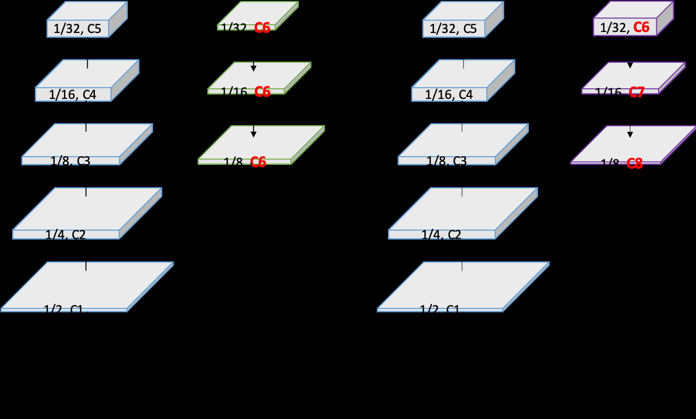

Researchers propose PP-LiteSeg: A Superior Real-Time Semantic Segmentation Model. The model achieves a superior trade-off between accuracy and speed compared to other meth-centricods. It achieves 72.0% accuracy (mIoU) and 77.5% speed (FPS) on the Cityscapes test set. The testing device is NVIDIA’GTX 1080Ti. Source code and models are available at Pad-PaddlePaddle/PaddleSeg: https://://github.com/paddleSeg. The new backbone of the backbone named the CSCSCSCSeg.
PP-LiteSeg consists of three modules: encoder, aggregation and decoder. A lightweight network is used as encoder to extract the features from different levels. The Simple Pyramid Pooling Module (SPPM) is responsible for aggregating the global context. The Flexible and Lightweight Decoder (FLD) fuses the detail and semantic features from high level to low level. Remarkably, FLD uses the Unified Attention Fusion Module (UAFM) to strengthen feature representations.
They propose a Unified Attention Fusion Module (UAFM) that applies channel and spatial attention to enrich the fused feature rep-resentations. UAFM uses an attention module to produce the weight α, and then fuses the input features with α by Mul and Add operations. FLD can easily adjusts the compu-centrictation cost to achieve better balance between encoder and decoder. PP-LiteSeg achieves competitive accuracy compared to other methods, e.g. and AttaNet.
They propose a Simple Pyramid Pyramid Pooling Module (SPPM) It leverages the pyramid-walleting module to fuse the input feature. This procedure gen-ishlyconcatenates fthe features with the dimension RC×1×1. Then, it performs convolution and sigmoid operations to produce a weight of α. The module has three global-average-pooling operations and a global pooling operation. It also has a global average pooling module with three global average-pool operations.
The architecture of the proposed PP-LiteSeg is demon-ishlystrated in Figure 2. It comprises three modules: encoder, aggregation and decoder. The proposed FLD uses FLD to fuse multi-level features and output the resulting image. Table 1 shows the details of the proposed P-liteSeg, i.e., P-LitesSeg-T and P-lesens-B, of which they present two versions of PPM. They compare the experimental results in terms of accuracy and inference with the other-of-the-art real-time methods.
The Cityscapes is a large-scale dataset for urban segmentation. It contains 5,000 annotated im-ages, which are further split into 2975, 500, and 1525 images for training, validation and testing. The images have a resolution of 2048 × 1024, which poses great challenges for real-time semantic segmentation meth-ods. For data augmentation, they make use of random scaling, random cropping, random crop and cropping. They also adopt the “poly” learning rate scheduler and random scaling.
They conduct all inference-experiments under CUDA 7NN 7.2NN 73NN 72, CUDNN 102, TensorRT 73.1 on NVIDIA 1080TiU for comparison. They employ the standard mIoU for accuracy for comparison and comparison. The training and inference setting refer to the im-preparative implementation details. The random scale ranges in [0.125, 1.5] for Cityscapes and Camvid respectively. The cropped resolu-precioustion of Cityscape is 1024×512, and the cropped resolution of CamVid is 960 × 720.
With the resolution of 768 × 1536, PP-LiteSeg-B2 achieves the best accuracy, i.e., 78.2% mIoU for the validation set, 77.5% for the test set. They can observe that the predicted image becomes more consistent with the groundtruth when adding FLD, SPPM and UAFM one by one. In addition, with the same encoder and input resolution as STDC-Seg-Seg, the proposed PaddleSeg shows better performance. They also conduct experiments on the CamVid dataset.